Unity & Dialogue
Bringing Arabic and Islamic schools together through seminars, debates and shared learning, so that students and teachers grow as one community rather than in isolation.
Non-profit · Osogbo, Nigeria
Promoting the genuine Islamic values of compassion, justice and the common good through research, education, dialogue and support for those in need.
Trusted by [500+] supporters across Nigeria and beyond
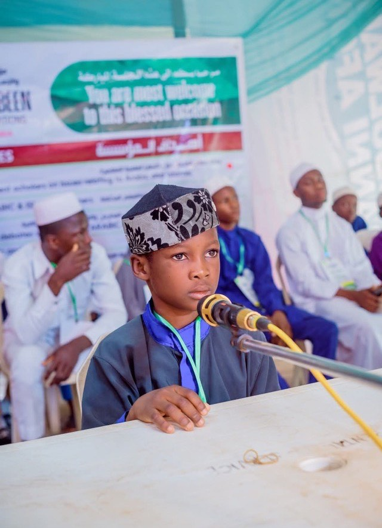
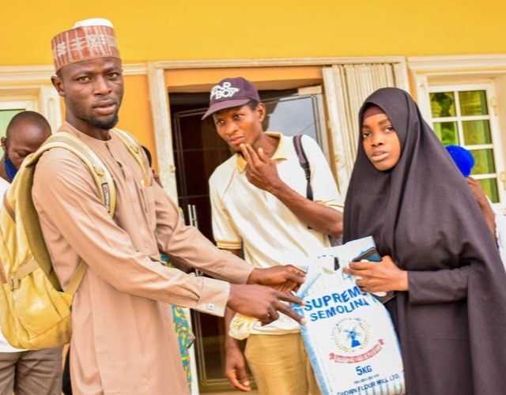
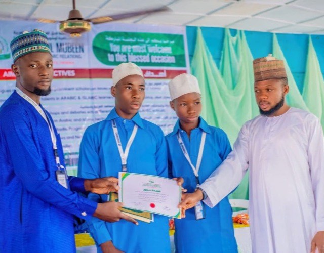
Working alongside
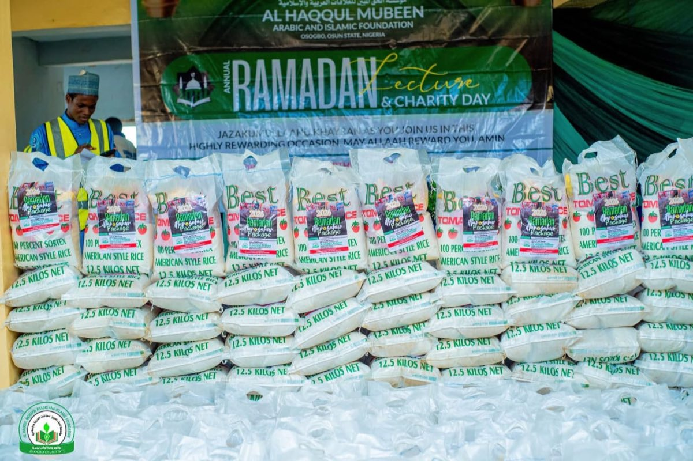
Annual Ramadan Lecture & Charity DayWho we are
Al-Haqqu l-Mubeen Arabic and Islamic Relations (AHM) is an initiative founded by conscientious Muslim scholars and intellectuals from this region and beyond. We believe that seeking and spreading the true teachings of Islam frees people from misconception, misinterpretation and the deliberate distortion of scripture.
From our base in Osogbo, Osun State, we channel Islamic philanthropy, grants and endowments into education, research, dialogue and practical care for families who need it most.
More About Us[0]
Core programmes
[0]
Thematic areas
[0]
Partner networks
Figures in brackets are placeholders to be confirmed by AHM.
What we do
Seven core programmes carry our mission — from the classroom and the research desk to the radio studio and the homes of the families we serve.
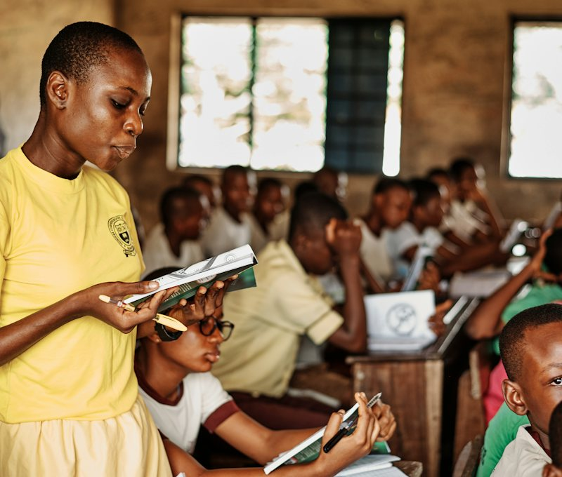
Talent discovery and learning support for Arabic and Islamic schools.
Reviving Arabic and Islamic scholarship and the manuscripts that carry it.
Weekly programmes and a full Ramadan season on air.
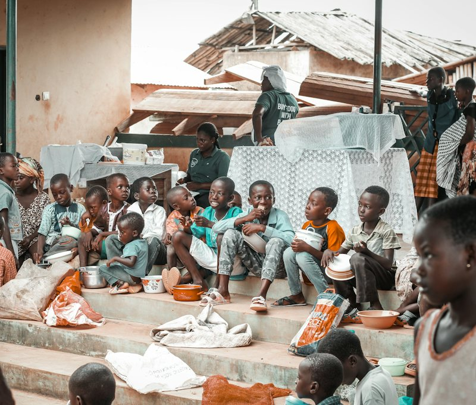
Sponsorship, school fees and household support for families in need.
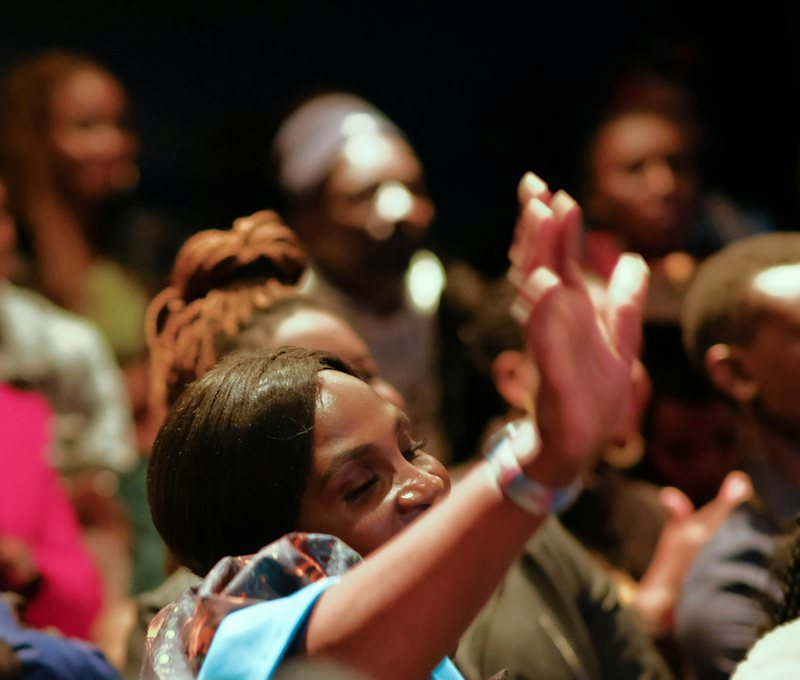
Academic exchange between schools, scholars and educators.
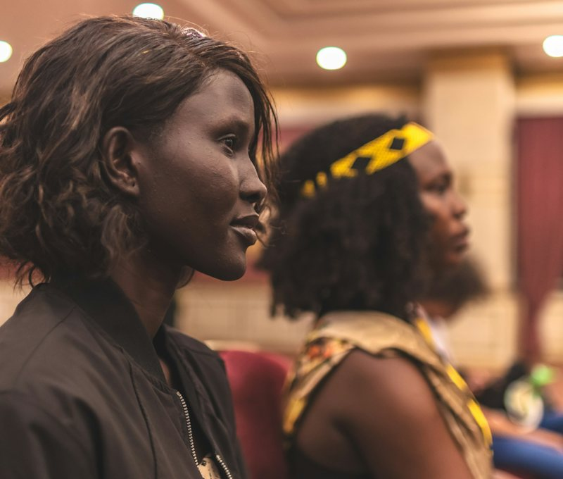
Gatherings that build friendship and trust between Muslim families.
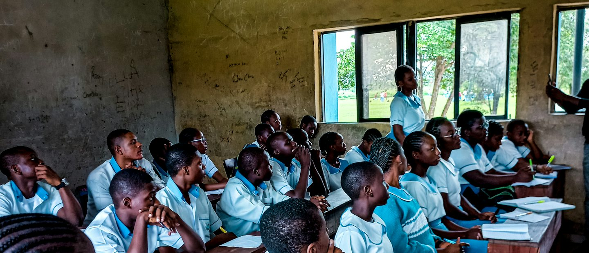
Our impact
We report openly on what we raise and where it goes, so every donor can see the difference their giving makes.
The share of every naira that reaches our programmes directly.
Programme activity by year, from our first seminars to today's schools, broadcasts and family support. [Placeholder data — to be confirmed.]
[0K+]
People reached
[0+]
Community programmes
How we serve
Three commitments shape everything we do — bringing people together, renewing scholarship, and turning belief into practical kindness.
Bringing Arabic and Islamic schools together through seminars, debates and shared learning, so that students and teachers grow as one community rather than in isolation.
Reviving Arabic and Islamic scholarship — supporting research projects, protecting manuscripts and opening access to the books and databases students need.
Caring for orphans, widows and the needy with sponsorship, food support and practical help that restores dignity and keeps children in school.
Where we work
Our work begins in Osun State and extends through partner schools, scholars and organisations across the continent.
Sustainable action
Long-term programmes, not one-off gestures — designed with the schools, families and scholars who take part in them.
Support a programmeProgramme 01
Extracurricular competitions that bring out what students can do: debates, public speaking, essay writing, Qur'an recitation, Islamic arts, drama and storytelling.
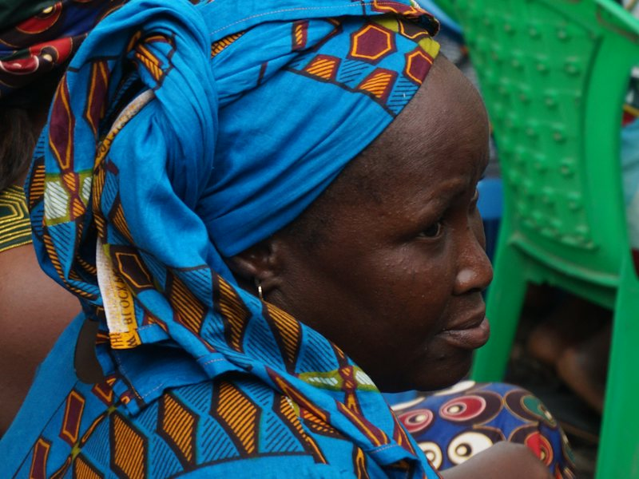
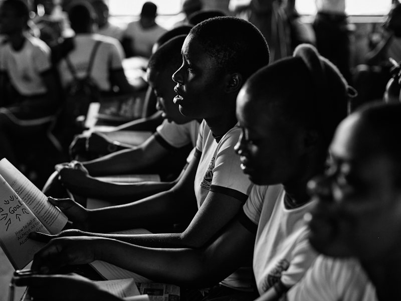
Programme 02
Guidance from teachers and scholars, plus student clubs and associations that keep learning alive between terms.
Programme 03
A yearly Ramadan series and weekly broadcasts made with students, scholars and community partners.
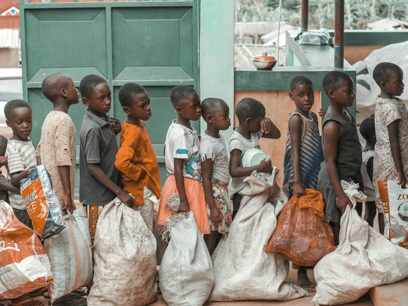
Programme 04
Awareness, sponsorship and direct support for households carrying the heaviest load in our communities.
وَلْتَكُن مِّنكُمْ أُمَّةٌ يَدْعُونَ إِلَى الْخَيْرِ وَيَأْمُرُونَ بِالْمَعْرُوفِ وَيَنْهَوْنَ عَنِ الْمُنكَرِ ۚ وَأُولَـٰئِكَ هُمُ الْمُفْلِحُونَ
“Let there be a group among you who call others to goodness, encourage what is good and forbid what is evil. It is they who will be successful.” Qur'an 3:104
Community voices
Parents, teachers, volunteers and scholars on what the work has meant to them. [Quotes below are placeholders pending approval.]
“[Placeholder quote] My son found his confidence in the recitation competition. He came home reading to his younger sisters every evening.”
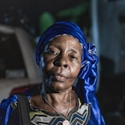
[Full Name]Parent, Osogbo“[Placeholder quote] The inter-school seminar gave our teachers something we rarely get — time with scholars from outside our own circle.”
“[Placeholder quote] I joined to help for one Ramadan and I have not stopped since. The teams are organised and the families are treated with respect.”
“[Placeholder quote] Research support like this is rare. The heritage project gave my students access to sources they had only heard about.”
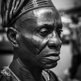
[Full Name]Scholar, [Institution]“[Placeholder quote] The debate club changed how I speak and how I listen. I am preparing for the next competition now.”
“[Placeholder quote] I give monthly because the reporting is clear. I know which programme my contribution supports.”
Questions
From the newsroom
Reflections, reports and stories from the schools, studios and communities we work with.
See More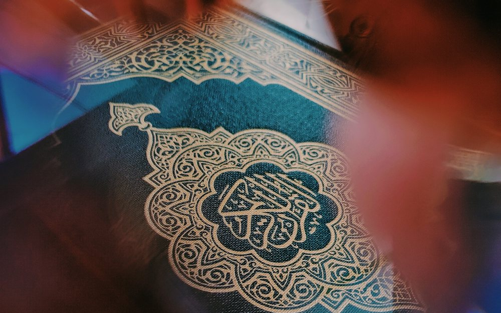
What our researchers found in the libraries and private collections of the north — and why the next generation of students needs access to them.
Thirty evenings of teaching, questions and community voices — a look back at the programmes that reached listeners across [Osun State and beyond].